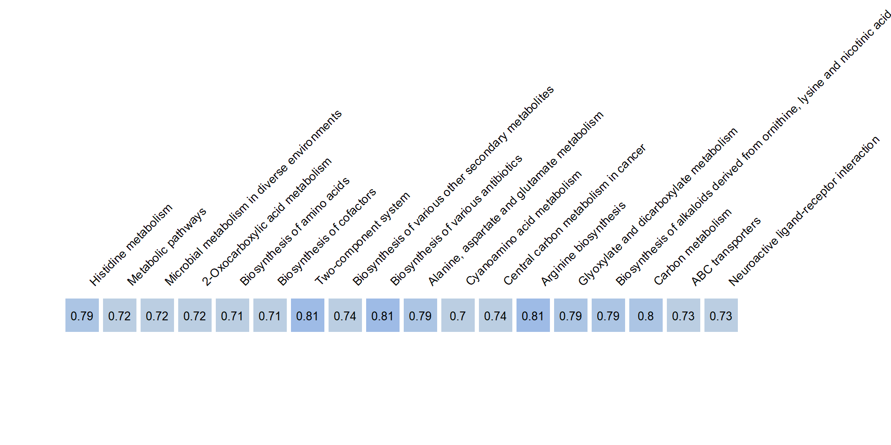

Chapter 4 Random Forest applied to MultiBlocks
The objectives of this third chapter are:
To confirm the result of important pathways from the Chapitre 2.
To identify the metabolites that are the most discriminative.
When using the Random Forest approach, we rely on a dataset where some metabolites may appear in multiple pathways (i.e., a redundant dataset). Since these pathways (or blocks) are not directly connected to each other, we analyze each functional block independently. This allows us to explore how each biological pathway contributes on its own, without considering interactions between pathways.
4.2 defining the working data: \(X\) et \(Y\)
In this analysis, two sets of variables are defined. The matrix \(X\) corresponds to metabolomic features grouped by biological pathways, while the matrix \(Y\) contains clinical variables measured in the same individuals.
Both matrices are aligned using a common set of sample identifiers to ensure that each row corresponds to the same individual across datasets. Missing values in \(Y\) are handled by removing variables with excessive missingness.
Clinical variables are further organized into predefined groups reflecting physiological functions. Additional covariates such as sampling location and clinical status are encoded and used for visualization purposes.
## X - METABOLOME
X = lapply(clean_data$Metabolites_pathways$X_list, function(x) t(x))
ID_in_X = rownames(X[[1]])
## Y - CLINICAL VARIABLES
Y = data$PHYSIO$`Clinical data`[ID_in_X,]
y = factor(Y$`City of testing`, levels = c("Lima" ,"Puno", "La Rinconada")) ## Altitude of residence
col.Y = factor(y, levels(y), paletteer::paletteer_d("tvthemes::Alexandrite")[4:6]) # Colors for plots
## CO-variates
pch.CMS = as.numeric(as.character(factor(Y$`CMS groups`,
c("No CMS", "Mild CMS", "Mod-Sev CMS"), c(16, 15, 15)) ))
y.age = (Y$Age)4.3 Random Forest on multiple pathways
I apply a Random Forest classifier, a machine learning algorithm that can learn patterns in complex data.
Here’s how it works in simple terms: I repeatedly split the data into: (i) a training set (to teach the model) and (ii) a test set (to evaluate performance)
For each biological pathway: I train a Random Forest model using the training data. I test how well it can predict the altitude group of individuals. I repeat this process 20 times to ensure the results are reliable.
set.seed(12)
accuracy.rf = accuracy.rf.random = NULL
for(cv in 1:20){
## Set de calibration et set de validation
intraining = caret::createDataPartition(y, p = 0.70, list = F)
mu_train = lapply(X, function(x) colMeans(x[intraining,])) ; sd_train = lapply(X, function(x) apply(x[intraining,], 2, sd))
## Scale the data depending on the train set
train <- lapply(X, function(x) scale(x[intraining,]))
test = lapply(X, function(x) x[-intraining,])
for(i in names(test)){
test[[i]] = scale(test[[i]], center = mu_train[[i]], scale = sd_train[[i]])
}
Y_TRAIN = y[intraining]
Y_TEST = y[-intraining]
accuracy = accuracy.random = NULL
### SYSTEMS
for(i in 1:length(train)){
rf <- randomForest(Y_TRAIN~., data.frame(train[[i]]), maxnodes = 5, mtry = 2, ntree = 3000)
# rf.random <- randomForest(sample(Y_TRAIN)~., data.frame(train[[i]]), maxnodes = 5, mtry = 2, ntree = 3000)
accuracy = c(accuracy, caret::confusionMatrix(predict(rf, data.frame(test[[i]])), Y_TEST)$overall[1])
# accuracy.random = c(accuracy.random, caret::confusionMatrix(predict(rf.random, data.frame(test[[i]])), Y_TEST)$overall[1])
}
accuracy.rf = rbind(accuracy.rf, accuracy)
# accuracy.rf.random = rbind(accuracy.rf.random, accuracy.random)
}
colnames(accuracy.rf) = names(train)For each pathway, I calculate the prediction accuracy:
High accuracy: the pathway strongly differs between altitude groups.
Low accuracy: the pathway is less informative.
r = colMeans(accuracy.rf)
r = r[which(r>0.7)]
## Parameters of the plot
### colors ramp of the r correlation direction
colfunc <- colorRampPalette(c("beige",'cornflowerblue'))(11)
colors_r = rep("NA", length(r))
for (i in 1:11){
colors_r[which( r > seq(0.5, 1, by = 0.05)[i] & r < seq(0.5, 1, by = 0.05)[i+1])] = colfunc[i]
}
colors_r[which(colors_r=="NA")] = "grey"
par(mar=c(1,1,15,8))
plot(1:length(r), y = rep(1, length(r)), pch = 15,
cex = 5, col = colors_r, axes = F, xlim = c(0,length(r)), ylim = c(0.5, 1.2), xlab = "", ylab = "")
text(1:length(r), y = rep(1, length(r)), labels = round(r, 2), cex = 0.8)
text(1:length(r), y = rep(1.15, length(r)), labels = names(r), cex = 0.8, srt = 45, pos = 4, xpd = "NA")